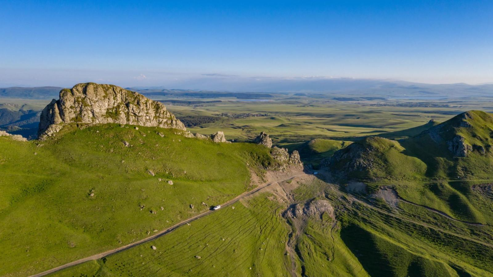
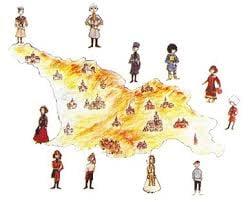

სოფლის მეურნეობას ქვემო ქართლის ეკონომიკაში მნიშვნელოვანი ადგილი უჭირავს და რეგიონში წარმოებულ დამატებულ ღირებულებაში მისი წილი 19%-ია. რეგიონში სოფლის მეურნეობაში შექმნილმა დამატებულმა ღირებულებამ 338,3 მლნ ლარი შეადგინა, რაც 24,6%-ით აღემატება 2010 წლის (271,6 მლნ ლარი), ხოლო 47,4%-ით - 2009 წლის ანალოგიურ მაჩვენებელს (229,5 მლნ ლარი). ამ დარგში რეგიონის მოსახლეობის 29%, ხოლო სოფლის მოსახლეობის 47,8% - 148 ათასი ადამიანია დასაქმებული. მიუხედავად იმისა, რომ, ძირითადად, ისინი თვითდასაქმებულთა კატეგორიას განეკუთვნებიან და თავიანთ ოჯახურ მეურნეობებში საქმიანობენ, დედაქალაქთან და მეზობელ სახელმწიფოებთან სიახლოვის გამო, საკმაოდ წარმატებით ახერხებენ საადრეო კარტოფილით, ბოსტნეულითა და მეცხოველეობის სხვადასხვა პროდუქტით ბაზრის ათვისებას. რეგიონის კლიმატური პირობები განსაკუთრებით ხელსაყრელია სოფლის მეურნეობის პროდუქციის წარმოებისთვის. მოსავლის მიღება შესაძლებელია წელიწადში 2-3-ჯერ, რაც განაპირობებს ქვემო ქართლის მაღალ კონკურენტუნარიანობას სხვა რეგიონებთან შედარებით
სოფელ საიმერლოში, ზაფხულში, სეტყვის თავიდან აცილების მიზნით ტარდება რიტული მსვლელობითა და შელოცვით, რომელიც მთავრდება საზეიმო სუფრითა და ლხინით. ეს წესჩვეულება რეგიონში შემოიტანეს და დაამკვიდრეს მაღალმთიანი იმერეთიდან გადმოსახლებულმა ოჯახებმა.
მარნეულის მუნიციპალიტეტში, სადაც მრავალი ეთნოსის წარმომადგენელი ცხოვრობს შესაბამისად მრავალფეროვანი ყოფითი კულტურით და დღესასწაულს ზეიმობდნენ. ერთ-ერთი გამორჩეული იყო ახალი წელი აქ თავს იყრიდა ზოგადი ტრადიციები, რომელთაც თავისებური ელფერი ჰქონდათ. ახალ წელს ყველა ოჯახი დიდი მოლოდინით და სიხარულით ხვდებოდა განსაკუთრებით მორთავდნენ სახლს, გააწყობდნენ საახალწლო სუფრას (სოფლებში აუცილებლად უნდა გამომცხვარიყო პური და ნაზუქი) და მეკვლეს ელოდებოდნენ. ერთ შემთხვავაში, ოჯახის უფროსი გადიოდა გარეთ და შინ ტკბილეულით გაწყობილი ხონჩით ბრუნდებოდა შინ, დალოცავდა ოჯახის ყველა წევრს, ღმერთს თხოვდა მომავალი წელი ბარაქიანი და წარმატებული ყოფილიყო. (ეს ხდებოდა ღამის 12 საათის შემდეგ, თოფის სროლის მერე). მეორე შემთხვევაში, მეკვლეს ოჯახი ირჩევდა ( უმეტესწილად ბავშვს), რამოდენმე წლის დაკვირვებით იტყოდნენ კარგი ფეხი აქვსო, მეკვლე მოდიოდა 1 იანვარს ადრე დილით, რომელსაც ოჯახი საგანგებოდ ხვდებოდა. მეკვლე ტკბილეულით ხელში შემოდიოდა, დასვავდნენ სუფრასთან, გარშემო მოუყრიდნენ მარცვლეულს (ხორბალი, სიმინდი), რომელიც წლის ბარაქას აღნიშნავდა, მეკვლე დაილოცებოდა - დალოცავდა ოჯახს, შემდეგ მოატარებდნენ პირუტყვისა და ფრინველების სადგომებს. იქაც დალოცავდა, ბარაქას უსურვებდა (შესაბამისად მიმდინარე წელი წარმატებისა და ბარაქის მოლოდინში იყო) და შემდეგ, მეკვლეს საპატიო ადგილზე დაჯდებოდა სუფრასთან და იმართებოდა ლხინი. სუფრაზე აუცილებელი იყო ღორის ხორცი და ნაზუქი, რაც სიძლიერე და სიტკბოს აღნიშნავდა.
